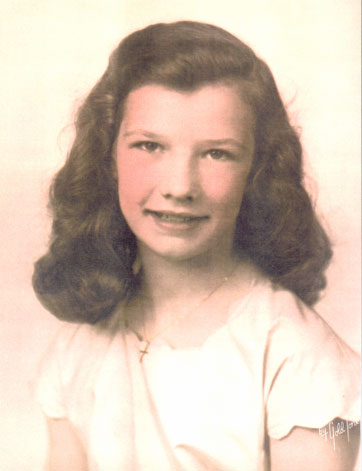
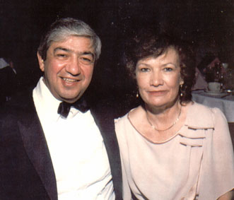

| Roberta Brown, or "Bobbie" as she is known, was born to Robert & Christina Brown on November 29th, 1934. She was the youngest of four children. |
 |
|
 |
She attend the Rochester Institute of Technology where she met Guy Iannello. They were married in Rochester, NY and had four children together. |